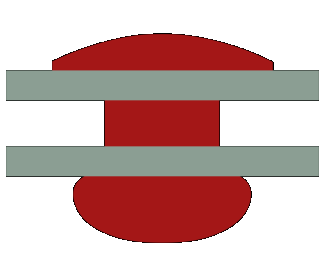
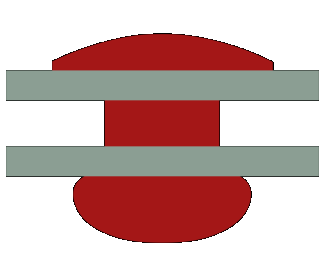

Definitions#
rivt#
text#
doc#
the output file (document) after processing a rivt file
division#
open source markdown language for writing, organizing and sharing engineering documents
report#
open source markdown language for writing, organizing and sharing engineering documents asdfasf sdflkjsadf sd fsaedlfk fsadlf sa
section#
open source markdown language for writing, organizing and sharing engineering documents
open source markdown language for writing, organizing and sharing engineering documents
open source editing and publishing framework for rivtlib Python library for processing xxxxxxxxxxx asefasfda sadlfkas fsaf sadlkfjs dfsldj sdflkjsd fsf sadlkmjs dfasdflkjsa asd fa
rivt-private#
folders containing private files not uploaded when sharing templates
rivt#
open source markdown language for organizing, modifying and publishing engineering documents
Python library for processing rivt files. It outputs formatted documents in a serveral different formats. The minimum software needed to write rivt documents is Python 3.8 with Python science libraries.
an editing and publishing framework for rivt using additional open source programs. rivt works with both single file documents and extensive reports with hundreds of files.
Python#
a name that provides a scope for functions, variables, etc. Namespaces are used to organize code into logical groups and to prevent name collisions that can occur especially when your code base includes multiple libraries. In Python, namespaces are defined by the individual modules.
GitHub#
open source editing and publishing framework for rivtlib Python library
short for repository